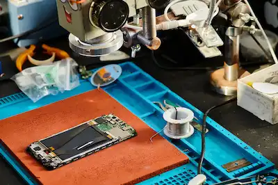
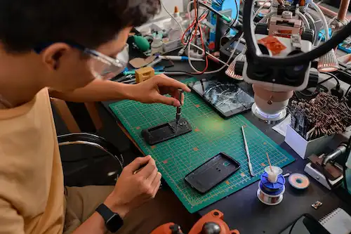

ABOUT US
We Fix Gadgets.
At Godwin Phone Repair hub, we are dedicated to being your go-to destination for all things mobile repair in Uyo City. With years of expertise and dedication under our belt, our team of skilled technicians excels in diagnosing and resolving a wide array of issues plaguing your devices.

We understand the frustration that comes with a malfunctioning device, which is why we strive to provide swift and reliable solutions that get you back to enjoying your gadgets in no time.
We're not just another mobile repair service – we're your trusted partners in keeping your devices running smoothly. With over 5 years of experience serving the Uyo City, our mission is simple: to provide top-quality repairs and exceptional customer
Our team of dedicated technicians brings a wealth of expertise to every repair job, ensuring that your devices are in capable hands. From cracked screens to water damage, battery issues to software glitches, we've seen it all and fixed it all.
PROCESS
Revive, Restore, Reconnect.
All you need to do is to trust the pros.
Contact Us
Reach out to Godwin Phone Repair Hub via phone, email, or our website to set an appointment in one of our offices.
Diagnostic Evaluation
Visit our conveniently located repair centers in Uyo and bring your smartphone along for diagnostics.
Expert Repair
Once the repair is complete, we'll notify you promptly. Return to our center to pick up your smartphone.

Mission & Vision
Godwin Phone Repair Hub Experts Are At Your Service.
We fix your devices; that's what we do.
- Mission
At Godwin Phone Repair Hub , our mission is to be the premier mobile repair service in Uyo, delivering exceptional quality and customer satisfaction. We strive to exceed expectations with every repair, ensuring that our clients' devices are restored to optimal functionality swiftly and seamlessly.
- Vision
Our vision at TechPro is to revolutionize the mobile repair industry by setting the standard for excellence and innovation. We aim to be the trusted partner for individuals and businesses alike, providing reliable solutions and personalized service that exceed expectations.
FAQ
Where Technology Meets Expertise.
Browse the section below if you have any questions.
How long does a typical phone repair take?
We offer fast services - most common repairs (screen, battery, charging port) are completed within 30 - 40 minutes.
What does your warranty cover?
We provide warranty on all repairs (e.g., 2-3 months on screen and batteries). It covers genuine parts and workmanship, not physical damage or water damage after repair.
Are you repair parts original or high quality?
We use high-grade, tested replacement parts with a focus on reliability. Original parts available on request for certain models.
How much will my repair cost? Can i get a quote before booking?
Yes, you can request a free quote via the booking form or call us to enquire
What phone brands do you repair?
We repair all major brands: Samsung, iphone, Tecno, Infinix, Itel, Xiaomi, Nokia, and more, including tablets.
What Should I Do if I'm Not Satisfied with the Repair Service?
Your satisfaction is our top priority. If you have any concerns about the repair service, please contact us immediately, and we will do our best to address and resolve any issues promptly.